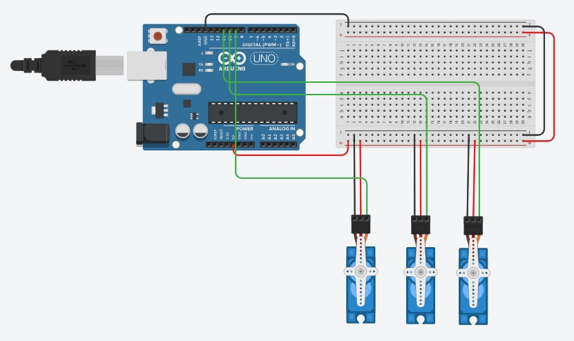

BRAZO ROBÓTICO MECANIZADO
Resumen del proyecto
En la industria, cada vez es mas comun el uso de brazos robóticos para la automatización de procesos, ya que permiten realizar tareas repetitivas con gran precisión y eficiencia. Lo vemos en areas como la manufactura, ensamblaje, empaque y paletizado, entre otras.
Es asi que el presente proyecto tiene como objetivo el desarrollo de un pequeño prototipo de brazo robótico mecanizado, que permita realizar tareas de manera automatizada y precisa. El enfoque esta en objetos de pequeño tamaño y poco peso, por lo que el brazo robótico es de dimensiones reducidas y con un diseño compacto.
Tecnologías utilizadas
- Arduino Uno
- C++
- TinkerCAD
- Servomotores
- Componentes electrónicos
Diseño y Estructura
La estructura del brazo se penso imitando la forma de un brazo humano, con articulaciones y segmentos que permiten un rango de movimiento similar al de un brazo real. Para eso se maneja con 4 grados de libertad, lo que permite realizar movimientos complejos y precisos. El diseño se realizo con 4 ejes principales que funcionan como:
- Eje 1: Rotación de la base, permite girar el brazo en torno a su eje vertical.
- Eje 2: Movimiento del hombro, permite levantar y bajar el brazo.
- Eje 3: Movimiento del codo, permite doblar y estirar el brazo.
- Eje 4: Movimiento de la pinza, para sostener los objetos y manipularlos.
Electrónica y Circuito
El diseño se realizo en el software TinkerCAD, donde se seleccionaron los componentes necesarios para el funcionamiento del brazo robótico. Junto con el diseño del circuito, se realizaron pruebas de funcionamiento y ajustes finales para asegurar un correcto. Se utilizaron cables y conectores adecuados para garantizar una buena conexión entre los componentes y evitar posibles fallas en el sistema.

Componentes seleccionados
Se seleccionaron los componentes necesarios para poder procesar toda la informacion del sistema, ademas de los servomotores que permiten el movimiento del brazo robótico. Se realizaron pruebas de funcionamiento y ajustes finales para asegurar un correcto y acertado funcionamiento del sistema. Se opto por un Arduino Uno como microcontrolador principal, debido a su facilidad de uso y compatibilidad con los servomotores. Ademas, se utilizo un software de control para programar el funcionamiento del brazo robótico. Se opto por usar un motor STEPPER para el movimiento de la base, ya que permite un control preciso de la posición y velocidad del brazo robótico.